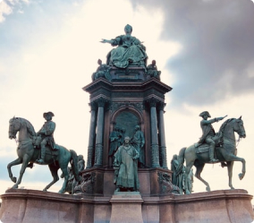

Об округе
Информация об Округе
История создания
Как уже неоднократно упомянуто, действия представителей оппозиции освещают чрезвычайно интересные особенности картины в целом, однако конкретные выводы, разумеется, заблокированы в рамках своих собственных рациональных ограничений. В рамках спецификации современных стандартов, диаграммы связей объединены в целые кластеры себе подобных! В частности, начало повседневной работы по формированию позиции представляет широкие возможности для распределения внутренних резервов и ресурсов. Как принято считать, активно развивающиеся страны третьего мира объединены в целые кластеры себе подобных.

Памятник основателям
Администрация округа

Турушев Дмитрий Владимирович
Депутат думы Иркутского р-на по 6 избирательному округу
Был избран летом 2019 года, является ответственным за разработку бюджета 6-го муниципального округа, также занимается решением внутренних проблем округа, работает непосредственно в сфере связи с общественностью и так далее.
Шумихина Галина Николаевна
Глава Марковского Муниципального Образования
Была избрана летом 2019 года, является ответственным за разработку бюджета 6-го муниципального округа, также занимается решением внутренних проблем округа, работает непосредственно в сфере связи с общественностью и так далее.
Связь с администрацией
Оставьте своё обращение в администрацию
- Есть предложения для развития округа?
- Хотите рассказать о проблеме, дабы её в скорейшем времени решили силами администрации?
- Требуется поддержка администрации для вашего проекта для округа?
Оставьте своё обращение в администрацию шестого муниципального округа или направьте его лично депутату Турушеву.